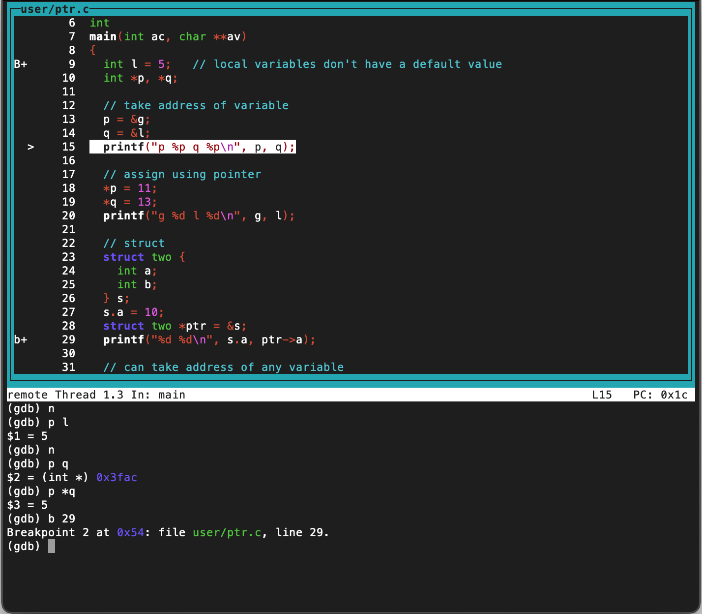

<html>
<head>
<title>GDB Guidance</title>
<link rel="stylesheet" href="labs.css" type="text/css" />
</head>
<body>
  
<h1><A HREF="../gdb/gdb-refcard.pdf">GDB Reference Card</A></h1>

<h1>Debuggers, Compilers, and Linker</h1>
<ul>
<li>GDB requires information describing the relationships between variables, executable code, and line numbers. 
<li>The compiler and linker (gcc) have options to generate debug information.
<li>The Xv6 makefile generates debug information for gdb.
<li>The gdb debug information is located in files.
<li>For the Xv6 kernel, the debug information is located in <tt>kernel/kernel</tt>.
<li>For the Xv6 utility programs like <tt>ls</tt>, the debug information is located in <tt>user/_ls</tt>.
<li>You must use the gdb <tt>file</tt> command to tell gdb where the debug information is located.
<pre>
(gdb) <kbd>file kernel/kernel</kbd>
(gdb) <kbd>file user/_ls</kbd>
</pre>
</ul>
<h1>Common issues with running GDB</h1>
<ol>
  <li> Running gdb from the wrong directory. You <b>MUST</b> run <tt>make qemu-gdb</tt> <b>AND</b> <tt>gdb-multiarch</tt> inside the <tt>xv6-labs</tt> directory. Not in <tt>~</tt> and not in <tt>xv6-labs/kernel</tt> or <tt>xv6-labs/user</tt>.
  <li> Running the wrong gdb. The XV6 machine code is RISC-V. You must run <tt>gdb-multiarch</tt>, which understands RISC-V machine code. The UMW CPSC Server is an x86 machine, and the plain <tt>gdb</tt> on the server understands x86 machine code.
  <li> gdb not being able to find what you are trying to debug. You might need to run <tt>target remote localhost:&lt;PORT_NUMBER&gt;</tt> from item 5 in the first window steps.
  <li> Not using the <tt>file</tt> command to enter the file you are trying to debug. You may get an error message that says something about using the <tt>file</tt> command or unknown symbol. The following are sample words - warning: No executable has been specified and target does not support determining executable automatically. Try using the <tt>file</tt> command. For example, <tt>(gdb) file kernel/kernel</tt> tells gdb knows to use the kernel code for debugging.
  <li> If you quit gdb, and then re-run <tt>gdb-multiarch</tt> without also re-running <tt>make qemu-gdb</tt>, weird things might happen. Most of the times it works but sometimes it does not and then you just need to restart both and start over. This might exhibit itself in a behavior of gdb not being responsive to your requests.
  <li> Not using gdb to help you debug! I know that using gdb is really annoying in the beginning but it is super super helpful in the later labs and we want you all to know the basic commands to make debugging less painful in the future.
</ol>

<h1>How to run GDB on the CPSC Server</h1>
Using gdb to debug XV6 requires two windows, each connected to the CPSC server. The Xv6 window runs XV6. The GDB window runs gdb, which allows you to control the execution of XV6 in the first window. The following steps show Linux commands and gdb commands. Linux commands are preceded by a <tt>$</tt>, for example <tt>$ cd xv6-labs</tt>. gdb commands are preceded by a <tt>(gdb)</tt>, for example, <tt>(gdb) b syscall</tt>.

<p><b>Xv6 Window</b>
<ol>
  <li> <tt>$ <kbd>ssh &lt;your_userid&gt;@cpsc.umw.edu</kbd></tt>
  <li> <tt>$ <kbd>git clone  https://github.com/gustycooper/xv6-labs.git</kbd></tt> (omit if you already have cloned the lab repo)
  <li> <tt>$ <kbd>cd xv6-labs</kbd></tt>
  <li> <tt>$ <kbd>make CPUS=1 qemu-gdb</kbd></tt>
  <li> NOTE: The last line of the output of the previous command should say something like <tt>tcp::&lt;PORT_NUMBER&gt;</tt>. For example, you might see <tt>tcp::26000</tt>. The port number is used in the second window.
</ol>

<b>GDB Window</b>
<ol>
  <li> <tt>$ <kbd>ssh &lt;your_userid&gt;@cpsc.umw.edu</kbd></tt>
  <li> <tt>$ <kbd>cd xv6-labs</kbd></tt>
  <li> <tt>$ <kbd>gdb-multiarch</kbd></tt>
  <li> <tt>(gdb) <kbd>target remote localhost:&lt;PORT_NUMBER&gt;</kbd></tt> <br> 
The <tt><kbd>PORT_NUMBER</kbd></tt> in step 4 is from step 5 in the first window steps above.
</ol>

Say you wanted to break every time the kernel enters the function <tt>syscall</tt> from <tt>kernel/syscall.c</tt>

<ol start="5">
  <li> <tt>(gdb) <kbd>file kernel/kernel</kbd></tt> (this is a binary that has all kernel code)
  <li> <tt>(gdb) <kbd>b syscall</kbd></tt> 
  <li> <tt>(gdb) <kbd>c</kbd></tt>. At this point you will start hitting the breakpoint set on <tt>syscall</tt>.
  <li> Keep entering <tt>(gdb) <kbd>c</kbd></tt> to see where the kernell hits the <tt>syscall</tt> function. By entering c many times, you will how the output in the first window is progressing.
</ol>


Now, say you wanted to break in the <tt>ls</tt> function in <tt>user/ls.c</tt>. Then, you would need to enter <tt>(gdb) <kbd>file user/_ls</kbd></tt> at step 5 since this is the name of the binary where that function is. You would also enter <tt>(gdb) <kbd>b ls</kbd></tt> in step 6.

<h1>Sample GDB Session Debugging an Xv6 Utility</h1>
This sample session "debugs" the file 

<a href="../lec/l-c/ptr.c"><tt>ptr.c</tt></a>, 
which is an example C program discussed during lecture 2.
<p> <b>GDB Window</b>
<pre>
$ ssh <your_userid>@cpsc.umw.edu
$ cd xv6-labs
$ gdb-multiarch
(gdb) <kbd>target remote localhost:<PORT_NUMBER></kbd> The PORT_NUMBER is from item 5 in the first window steps above.
file user/_ptr
(gdb) <kbd>file user/_ptr</kbd>
A program is being debugged already.
Are you sure you want to change the file? (y or n) y
Reading symbols from user/_ptr...
b ptr.c:8
(gdb) <kbd>b ptr.c:9</kbd>
Breakpoint 1 at 0xa: file user/ptr.c, line 9.
(gdb) <kbd>info breakpoints</kbd>
Num     Type           Disp Enb Address            What
1       breakpoint     keep y   0x000000000000000a in main at user/ptr.c:9
(gdb) <kbd>c</kbd>
Continuing.

Breakpoint 1, main (ac=1, av=0x3fe0) at user/ptr.c:9
9	  int l = 5;   // local variables don't have a default value
(gdb) <kbd>c</kbd>
Continuing.

Breakpoint 1, main (ac=8224, av=0x64 <main+100>) at user/ptr.c:9
9	  int l = 5;   // local variables don't have a default value
(gdb) <kbd>c</kbd>
Continuing.

</pre>
<ul>
<li>On the third continue, Xv6 shell displays the $
<li>The breakpoint at <tt>ptr.c:9</tt> is an virtual address in user space. 
<li>All of the Xv6 processes have the same user space virtual addresses.
<li>The init process has this virtual address  and it breaks.
<li>The shell process has this virtual address and it breaks.
<li>At this point the Xv6 window has the shell prompt of $ 
<li>Enter <tt>$ <kbd>ptr</kbd></tt> in the Xv6 window to run the <tt>ptr</tt> utility.
<li>The next breakpoint at this address will be in <tt>ptr</tt>.
</ul>

<pre>
Breakpoint 1, main (ac=1, av=0x3fe0) at user/ptr.c:9
9	  int l = 5;   // local variables don't have a default value

(gdb) <kbd>layout src</kbd>   // to show source code
(gdb) <kbd>n</kbd>
</pre>
<ul>
<li>When you hit the breakpoint, GDB may indicate that it does not have source code.
<li>Entering the <kbd>n</kbd> command executed the next statement and shows the <tt>ptr.c</tt> 
source code in the upper half of the window.
<li>The next few GDB commands display the values of various variables.
</ul>

<pre>
(gdb) <kbd>p l</kbd>
$1 = 5
(gdb) <kbd>n</kbd>
(gdb) <kbd>p q</kbd>
$2 = (int *) 0x3fac
(gdb) <kbd>p *q</kbd>
$3 = 5
(gdb) <kbd>b 29</kbd>
Breakpoint 2 at 0x54: file user/ptr.c, line 29.

(gdb) <kbd>c</kbd>
Continuing.

Breakpint 2, main (ac=<optimized out>, av=<optimized out>) at user/ptr.c:29

</pre>
The following shows the GDB window after Breakpoint 2 has been hit.
<p>


<!-- -->

<pre>
(gdb) <kbd>p ptr->a</kbd>
s4 = 10
(gdb) <kbd>p s.a</kbd>           // ptr->a and s.a are equivalent
$5 = 10
(gdb) <kbd>p s.b</kbd>
$6 = <optimized out>  // We did not assign s.b a value
(gdb) <kbd>p ptr->b</kbd>
$7 = <optimized out>  // ptr->b and s.b are equivalent
(gdb) <kbd>b 40</kbd>
Breakpoint 3 at 0x9a: file user/ptr.c, line 40.

(gdb) <kbd>c</kbd>
Continuing.

Breakpint 3, main (ac=<optimized out>, av=<optimized out>) at user/ptr.c:40
(gdb) <kbd>p pp</kbd>
$8 = (int **)0x3fa0
(gdb) <kbd>p *pp</kbd>
$9 = (int *)0x1000
(gdb) <kbd>p **pp</kbd>
$10 = 11
(gdb) <kbd>p *p</kbd>
$11 = 11
(gdb) <kbd>c</kbd>
Continuing.

Breakpint 2, main (ac=8224, av=0x64 <main+100>) at user/ptr.c:9
(gdb) <kbd>c</kbd>
Continuing.

</pre>

<p><b>Xv6 Window</b>
<pre>
$ <kbd>make CPUS=1 qemu-gdb</kbd>
*** Now run 'gdb' in another window.
qemu-system-riscv64 -machine virt -bios none -kernel kernel/kernel -m 128M -smp 1 -nographic -global virtio-mmio.force-legacy=false -drive file=fs.img,if=none,format=raw,id=x0 -device virtio-blk-device,drive=x0,bus=virtio-mmio-bus.0 -S -gdb tcp::26003

xv6 kernel is booting

init: starting sh

$ <kbd>ptr</kbd>   
p 0x0000000000001000 q 0x0000000000003FAC
g 11 l 13
10 10
pp 0x0000000000003FA0 0x0000000000001000 11
main: 0x0000000000000000
</pre>


<H1><A HREF="../gdb/gdb_toc.html#SEC1">GDB Webpages TOC</A> and <A HREF="../gdb/gdb_25.html">Index</A></H1>
We have some helpful webpages on using GDB with our labs located at 
<a href="../gdb/gdb_toc.html#SEC1">GDB Webpages TOC</a>, with an index at <a href="../gdb/gdb_25.html">GDB Webpages Index</a>. 

<p>Out helpful webpages have been crafted for our class, and they are an abbreviated version of the  
<a href="https://web.mit.edu/gnu/doc/html/gdb_1.html">MIT GDB Webpages</a>, with an index at <a href="https://web.mit.edu/gnu/doc/html/gdb_25.html">MIT GDB Webpages</a>.

<P>GDB is a source-level debugger created by Richard M. Stallman. Many have contributed to the development of GDB:
<A NAME="SEC3" HREF="../gdb/gdb_1.html#SEC3">Contributors to GDB</A>

<h1>Commonly Used GDB Commands</h1>
<h2>Telling GDB Where to Find Symbols</h2>
<p>To perform symbolic debugging, you must tell gdb where to find symbol definitions. When a program is loaded into memory, the code and variables are loaded into specific addresses. The symbol information is created by the compiler/linker and defines the relationships between symbols (functions and variables) and memory. The gdb <code>file filename</code> command tells gdb where the symbol information is located. The following is a sample.
<pre>
(gdb) file kernel/kernel
</pre>

<h2>Printing Expressions, which include Variables</h2>
<p>The gdb <code>p exp</code> command is used to print the value of expressions. Just like in programming languages, the expression contains operands (i.e., variables, constants) and operators. When a variable is used in an expression, the value of the variable is printed. The following show simple uses of the gdb <code>p</code> command where the expressions are addition of constants, a variable, and multiplication of a variable and a constant.
<pre>
(gdb) p 5 + 6
$7 = 11
(gdb) p num
$8 = 7
(gdb) p num * 4
$9 = 28
</pre>
<p>You can also use the <code>p</code> command to print the values of pointers and the struture that that pointer points to. Suppose you had a variable <code>struct proc *p</code> that points to a <code>struct proc</code>. The definition of <code>struct proc</code> is in <a href="https://github.com/mit-pdos/xv6-riscv/blob/riscv/kernel/proc.h">kernel/proc.h</a>, which is repeated here.
<pre>
// Per-process state
struct proc {
  struct spinlock lock;

  // p->lock must be held when using these:
  enum procstate state;        // Process state
  void *chan;                  // If non-zero, sleeping on chan
  int killed;                  // If non-zero, have been killed
  int xstate;                  // Exit status to be returned to parent's wait
  int pid;                     // Process ID

  // wait_lock must be held when using this:
  struct proc *parent;         // Parent process

  // these are private to the process, so p->lock need not be held.
  uint64 kstack;               // Virtual address of kernel stack
  uint64 sz;                   // Size of process memory (bytes)
  pagetable_t pagetable;       // User page table
  struct trapframe *trapframe; // data page for trampoline.S
  struct context context;      // swtch() here to run process
  struct file *ofile[NOFILE];  // Open files
  struct inode *cwd;           // Current directory
  char name[16];               // Process name (debugging)
};
</pre>

<p>When a pointer is used in an expression, the value of a pointer is an address. When you use the <code>p</code> command to print the variable <code>p</code>, you see the value of the pointer <code>p</code>, which is just a hex number. What you are really interested in is the structure that <code>p</code> points to.
<pre>
(gdb) p p
$1 (struct proc *)0x80008eb0 <proc>
</pre>
<p>When a pointer is dereferenced (e.g., <code>*p</code>) in an expression, the value of the dereferenced pointer is the entire structure that it points to. The value of <code>*p</code> is the entire contents of the <code>struct proc</code>. To see the contents of the <code>struct proc</code> that p points to, and the value of the <code>struct proc's</code> member <code>trapframe</code>, you enter the following commands. The <code>/x</code> option of <code>p /x</code> instructs gdb to display the values as hexadecimal numbers.
<pre>
(gdb) p /x *p
$2 = {lock = {locked = 0x0, name = 0x80008178, cpu = 0x0}, state = 0x4, chan = 0x0, killed = 0x0, xstate = 0x0, pid = 0x1, mask = 0x0,
  parent = 0x0, kstack = 0x3fffffd000, sz = 0x1000, pagetable = 0x87f73000, trapframe = 0x87f74000, context = {ra = 0x800014ba, sp = 0x3fffffde70,
    s0 = 0x3fffffdea0, s1 = 0x80008eb0, s2 = 0x80008a80, s3 = 0x1, s4 = 0x3fffffded0, s5 = 0x8000ed38, s6 = 0x3, s7 = 0x80019b50, s8 = 0x1,
    s9 = 0x80019c78, s10 = 0x4, s11 = 0x0}, ofile = {0x0 <repeats 16 times>}, cwd = 0x80016fc0, name = {0x69, 0x6e, 0x69, 0x74, 0x63, 0x6f, 0x64,
    0x65, 0x0, 0x0, 0x0, 0x0, 0x0, 0x0, 0x0, 0x0}}
(gdb) p /x *(p->trapframe)
$3 = {kernel_satp = 0x8000000000087fff, kernel_sp = 0x3fffffe000, kernel_trap = 0x80001d0c, epc = 0x18, kernel_hartid = 0x1,
  ra = 0x505050505050505, sp = 0x1000, gp = 0x505050505050505, tp = 0x505050505050505, t0 = 0x505050505050505, t1 = 0x505050505050505,
  t2 = 0x505050505050505, s0 = 0x505050505050505, s1 = 0x505050505050505, a0 = 0x24, a1 = 0x2b, a2 = 0x505050505050505, a3 = 0x505050505050505,
  a4 = 0x505050505050505, a5 = 0x505050505050505, a6 = 0x505050505050505, a7 = 0x7, s2 = 0x505050505050505, s3 = 0x505050505050505,
  s4 = 0x505050505050505, s5 = 0x505050505050505, s6 = 0x505050505050505, s7 = 0x505050505050505, s8 = 0x505050505050505, s9 = 0x505050505050505,
  s10 = 0x505050505050505, s11 = 0x505050505050505, t3 = 0x505050505050505, t4 = 0x505050505050505, t5 = 0x505050505050505, t6 = 0x505050505050505}

</pre>
<ol>
 <li>list elements here.
</ol>

</body>
</html>
